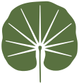
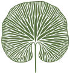
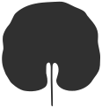

Leaf mark options
Two solid versions of the Calea leaf, traced from the original artwork. The plain solid holds up at small sizes (favicon, phone menu, header). The veined solid keeps the original's detail and works from about 60px up.
Sea grape versions
Solid leaf with a few bold veins cut in, so it still reads as a sea grape leaf at small sizes. A has the fewest veins and holds best when tiny; C has the most detail. Version B is in the site header; A is the browser tab icon.
 Sea grape B · green
Sea grape B · green Sea grape B · white
Sea grape B · white
Sea grape C · whiteAt small sizes
More small-size options
D · Heavy line keeps the original as a line drawing, with a bold outline and five veins. Weakest of these at 16px. E · Radiating fan keeps the original's vein pattern, fanning out from the stem, cut down to nine bold veins. F · Badge puts the leaf inside a circle, for app icons, social profiles and the browser tab.

E · Radiating fan · green
E · Radiating fan · whiteAt small sizes
Fully solid versions
 Solid · green
Solid · green
Veined solid · green Solid · white
Solid · white
Solid · deep grayWhite on Calea GreenAt small sizes